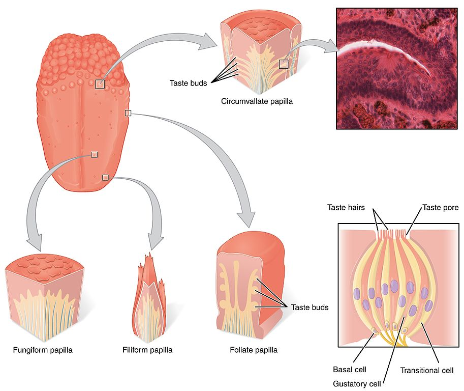
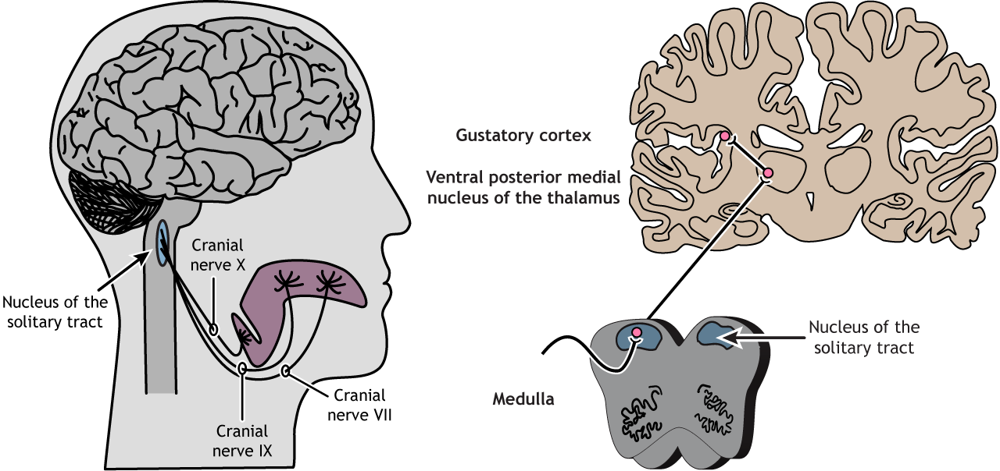
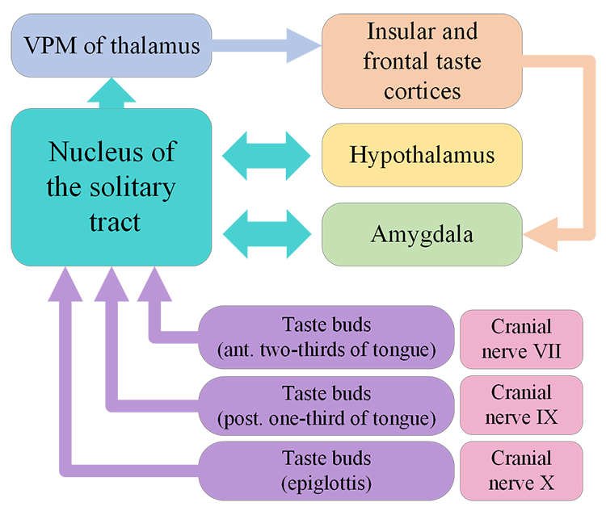
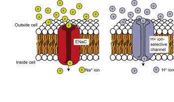
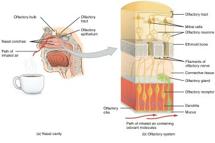
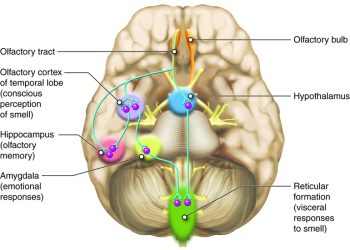
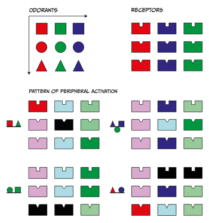

Chemical senses: taste and smell
Learning objectives
By the end of this chapter, you will be able to:
- identify the stimuli and sensory structures involved in taste and smell sensations
- understand the transduction mechanisms in place to transform chemical information into action potentials within each sense
- describe the neural pathways supporting gustatory and olfactory perception.
Sensing chemical compounds in the environment is the most archaic sensory mechanism in living organisms. Very early on in the history of life on Earth, unicellular organisms developed chemical detection to distinguish food from toxins, to find mates and avoid danger. All the way to the present day, motivated and emotional behaviours in human and non-human animals are greatly influenced by detection of environmental chemical signals. In this chapter, we will revise the current knowledge of chemical senses in humans, paying special attention to the signals they can detect, how the transduction from chemical to neural code takes place, and what brain regions are involved in each case.
Humans can detect chemical compounds in the environment via the olfactory (smells) and gustatory (tastes) systems. Flavours are also a product of chemical sensation, but they result from the combined perception of smells and tastes. Through these specialised senses, chemical information in the surrounding environment is captured by chemosensory receptors, located mainly in the mouth and nasal cavity. Information regarding quality and quantity of chemicals is converted into the language of the nervous system, action potentials, through sensory transduction, and then transmitted to the central nervous system. In the brain, this information is integrated to produce olfactory and gustatory perception that will ultimately influence decision-making and behavioural selection and action.
Even though somewhat less studied than senses such as vision and audition, the chemical senses can be organised in two systems: gustation and olfaction. The gustatory sense, or sense of taste, picks up on soluble chemical compounds, present in the mouth. The olfactory sense, or sense of smell, reacts to airborne molecules that reach the nasal cavity.
These sensory systems provide animals with key environmental information for producing adaptive behaviours. Smells serve as long- and short-range signals, whereas tastes only act in the short-range, after we ingest food or drinks. This information may be crucial for finding, selecting and consuming food, finding a potential mate or regulating social interactions with others. Even though the chemical senses are composed by standalone systems, their coordinated action can produce even more complex sensory capacities such as detecting flavours, which involves the activation of common sensory neurons within the piriform cortex – the part of the brain that first processes olfactory information (Fu, Sugai, Yoshimura, & Onoda, 2004).
Sense of taste
Anatomical overview
Our sense of taste starts with tastant molecules reaching our mouth through ingestion.
Tastants are water-soluble or lipid-soluble chemical substances, present in food or drinks, that create the sensation of taste when detected by taste receptor cells (TRC) within the mouth. We are quite familiar with the many little raised bumps on our tongue epithelium that can be seen by looking at the tongue with a naked eye. These lumps are called papillae, and it is within the walls and fissures of the papillae that we find the taste buds that contain the taste receptor cells. There are thousands of taste buds in each papillae, which are divided into three categories, depending on their location: the foliate papillae located on the sides of the posterior section of the tongue; the circumvallate papillae located at the back of the tongue; and the fungiform papillae located in the anterior part of the tongue (Figure 4.46).

Each taste bud contains groups of between 50 and 150 taste receptor cells, and presents an upper aperture called the taste pore. TRCs project fine hair-like extensions, or microvilli, out of taste pores into the buccal cavity, where they encounter the tastants.
In humans, there are three main types of taste receptor cells, according to their function. Type I cells have primarily housekeeping functions. Type II cells are sensitive to sweet, bitter, and umami tastes. Type III cells appear to mediate sour taste perception. Detection of tastant compounds by receptor cells leads to neurotransmitter release (usually ATP) and generation of action potentials in neurons at the base of these receptor cells. The axons of these neurons form the afferent nerves that transmit the information to the brain via three different cranial nerves: VII, IX and X. Different papillae areas are innervated by different branches of the cranial nerves VII, IX, and X. The anterior two-thirds of the tongue, with the fungiform papillae, is supplied by branches of cranial nerve VII. The posterior third of the tongue is innervated by branches of nerve IX, the glossopharyngeal nerve. The posterior regions of the oesophagus and the soft palate are innervated by branches of cranial nerve X.
Nerves VII, IX and X project into the brainstem where they synapse with the rostral part of the nucleus of the solitary tract (NTS) which relays information to the ventral posterior medial nucleus of the thalamus. The thalamus projects to the anterior insular cortex and to a region called the primary gustatory cortex or insular taste cortex. Neural signals from the insular taste cortex travel to the secondary gustatory cortex, within the medial and lateral orbitofrontal cortex, and project also to structures like the amygdala, hippocampus, striatum and hypothalamus, where this sensory information can affect different stages of decision-making and behavioural output (Figure 4.48).


Did you know?
Taste buds have a life span of about two weeks, allowing them to grow back even when they are destroyed, for example when we burn our tongues. This makes them akin to skin cells, but they also share characteristics akin to neurons. For example, they have excitable membranes and release neurotransmitters.
Sensory transduction
How is the chemical information contained in the quality and quantity of specific tastants transformed into neural signals that the brain can interpret?
Tastants enter the papillae through the taste pore and induce different mechanisms in taste receptor cells. Each receptor cell has distinct mechanisms for transducing the chemical information into neural activity. Tastants are divided into salty, sour, sweet, bitter, and, umami – derived from the Japanese word meaning ‘deliciousness’. The umami taste is produced by monosodium glutamate, and probably other related amino acids.

As we have heard, components of salty chemicals are key for survival in several animals. Na+ ions contained in the saltiest of all salts, sodium chloride (NaCl), is key for maintaining muscle and neuronal functioning. A sub-group of Type II taste receptor cells are specialised for salt detection. These cells express receptors that detect and react to the presence of salty substances containing Na+. Similar Type II receptors express channels that allow other free cations such as H+ released by acid compounds into the cell (Figure 4.49a). Receptor cells expressing ion channels for Na+ or H+ allow these cations into the intracellular space, depolarisating the membrane, leading to release of neurotransmitter, typically ATP, and action potential firing in the neurons that make up the cranial nerves. Recent research has identified the ion channel responsible for NaCl detection in mice. Deletion of the gene that produces the epithelial sodium channel (ENaC) in mice specifically affected a sub-group of Type II taste receptor cells. Mice lacking ENaC showed complete loss of salt attraction and sodium taste responses compared to control animals (Chandrashekar et al., 2010). This was the first evidence that salt is detected by a specific protein expressed in a distinctive type of TRCs.Other categories of tastant molecules, specifically those perceived as sweet, bitter, and umami, activate G-protein-coupled receptors (GPCRs, Figure 4.49b).

As we have heard in earlier chapters, GPCRs are transmembrane receptors associated on their cytoplasmic side with G-proteins. They use a ‘key to lock’ mechanism for the transduction of the chemical information into neural activity. When a particular tastant molecule is recognised by a GPCR, the associated G-protein is activated, dissociating into α and βγ subunits. These can activate further intracellular signalling cascades, leading to depolarisation and/or an increase in intracellular calcium concentration that ultimately results in the release of neurotransmitters, usually ATP.
In mammals, sweet and umami receptors are heteromeric GPCR named T1R2+3 and T1R1+3, respectively. These receptors are a combination of proteins from families T1R1, T1R2 or T1R3, and can detect sweet and umami taste compounds. Like the ENaC knockout mice, animals without T1R1 fail to detect umami compounds, whereas animals lacking T1R2 fail to detect sweet tastes (Zhao et al., 2003).
Exercise
Domestic cats, lions or tigers do not have the genes that codify for T1R2 receptors. This means they cannot taste sweet tastes and are unable to experience sweetness. How do you think this fact influences their strictly carnivore diet?
Topography/distribution of taste receptors
Historically, scientists had a rigid view of the topography or distribution of taste receptors, but this concept is slowly being abandoned. Nowadays, we recognise that taste zones across the surface of the tongue are not absolute, and that all zones can detect all tastes, albeit with different detection capacities. Taste sensitivity thresholds, rather than receptor distribution, vary across the surface of the tongue, with all areas showing higher or lower sensitivity to all tastants. For instance, receptors with higher sensitivity for bitter tastants tend to be distributed posteriorly in the tongue. Salty and sweet tastes are more easily detected in the tip of the tongue and are conveyed primarily by cranial nerve VII. Bitter sensations are mainly relayed by cranial nerve IX, which provides innervation to the posterior third of the tongue.
Coding of information in the gustatory system
There is generally a proportional relationship between the concentration of the tastant and the firing rate of first order axons that enter the brain stem, so coding of taste intensity is based, at least in part, on frequency of action potentials.
Coding of gustatory information is also based on the topographical distribution of the taste receptor cells sensitivity. This distribution provides the foundation for labelled-line coding (Squire et al., 2012), meaning that information about the nature of the taste is provided by which cell has been activated. In other words, an axon that receives information from a sweet receptor is labeled as codifying sweetness. Hence, whenever this axon fires an action potential and conveys that signal into the brainstem, the received input is interpreted as sweetness. This is similar to the principles of encoding we encounter in the somatic sensory system, where the identity of the activated neuron, rather than the firing rate, indicates the quality of the signal carried by it (for example activation of a neuron innervating the finger is perceived as coming from that area, and the type of neuron activated influences what sensation is perceived).
In the case of gustation, we might recognise activity of axons as signals of the presence of sour, bitter, salty, sweet, and umami tastants. Other evidence, however, suggests that the pattern of activity across neurons that preferentially respond to different taste characteristics is used to code for specific tastes (pattern or ensemble coding).
Within the central nervous system, tastants’ identity is preserved in the relays from the nucleus of the solitary tract, into the ventral posterior medial complex of the thalamus, the gustatory cortex or insula (Doty, 2015). For some time, it was assumed that the insula would represent taste categories in a ‘gustotopic map’, but the empirical evidence has been elusive. Recent studies, using genetic tracing of taste receptor cells into the gustatory cortex, suggest that there are distinctive spatial patterns within the cortex, but no region is assigned to a single tastant (Accolla et al., 2007). Finally, the information from tastants reaches the orbitofrontal cortex, where it is integrated with sensory information from different modalities, suggesting that this area integrates tastes with other information to create more complex perceptual experiences.
Did you know?
There is some evidence of labelled-line coding in all of the sensory systems.
The concept refers to the idea that the line, or the pathway, from peripheral receptor into the brain, is labelled based on the presence of particular receptors that accomplish the sensory transduction process.
Sense of smell
Anatomical overview
In humans, olfaction, or the sense of smell, detects airborne molecules or odorants that enter the nasal cavity. Odorants interact with olfactory sensory neurons (OSNs) located in the olfactory epithelium that covers the dorsal and medial aspect of the nasal passageway (Figure 4.50).

OSNs are in charge of transducing the chemical information of odorants, encoding information about quality and quantity of smells, into action potentials that can be interpreted by the brain. Olfactory receptor cells extend their axons through the ethmoid bone, also called the cribriform plate. These axons make synaptic contact with the mitral cells within structures known as glomeruli within the olfactory bulb. Axons from the mitral cells bundle together and join the first cranial nerve, conveying olfactory information to various brain regions.
Information about the presence and quantity of smells leaves the olfactory bulb via the lateral olfactory tract. On the olfactory pathway, the lateral olfactory tract connects back to the inferior and posterior parts of the frontal lobe, near the junction of the frontal lobe and the temporal lobe, which constitutes the beginnings of the olfactory cortex (Figure 4.51).

Unlike other primary sensory cortices, primary olfactory cortex comprises a number of different structures. These include subcortical structures such as the olfactory tubercle, in the ventral part of the striatum, and part of the amygdala as well as cortical regions in the medial part of the temporal lobe (entorhinal cortex) and its junction with the frontal lobe (piriform cortex). The divisions of the olfactory cortex are interconnected, and even though there is most emphasis on the piriform cortex, the entire extended network of these regions constitute the olfactory cortex. Furthermore, these divisions of the olfactory cortex also project to other brain areas, including the thalamus, hypothalamus, hippocampus and, especially importantly, the orbital and frontal parts of the prefrontal cortex.
Unlike other sensory systems, in olfaction, there is not a thalamic relay between the peripheral sensory structures, i.e. the olfactory bulb, and the cortex (Breslin, 2019). In the olfactory system the connection with the thalamus is downstream from the cerebral cortex.
Sensory transduction and odour representation
Several types of cells are present at the olfactory epithelium. Supporting cells provide metabolic and physical support for the epithelium, but smell detection and transduction relies on mature cells called olfactory sensory neurons (OSNs). The nasal cavity is a challenging environment for living cells due to significant changes in environmental conditions such as humidity and temperature, which result in a short lifespan of OSNs. Constant mitotic divisions and maturation of basal cells replenishes the pool of OSNs, maintaining their number. In addition to the sensory and supporting cells, the epithelium is composed of glandular cells that produce and secrete the thick mucus that covers and protects its more exposed cellular structures (Figure 4.50).
Odorant molecules that access the nasal cavity and diffuse through the mucus interact with olfactory cilia, hairlike extensions projecting from the end of the OSN dendrite. Embedded in the membrane of the olfactory cilia are the receptor proteins that bind with the odorants. Humans have around one thousand different odour receptor (OR) genes but can perceive more than a trillion different odours (Bushdid et al., 2014). In a characteristic arrangement of ‘one-to-one-to-one’, each OSN express only one type of OR gene, and all OSN expressing the same OR protein project their axons to the same glomeruli within the olfactory bulb (Figure 4.50). Hence, glomeruli activation recapitulates OR activation, reproducing a combinatorial code of glomeruli activity unique to each odour.
The current understanding of how odours are recognise at the neural level is explained by the shape-pattern theory, which proposes that each scent activates unique arrays of olfactory receptors in the epithelium. The molecular attributes of odours will determine how many OR can bind to them. Hence, one odour will activate a series of OR with more or less intensity, and this pattern of OR activation is what the brain recognises as a label for that particular odour molecule. Different odours will trigger different OR activation patterns, but familiar odours (i.e., sharing some molecular properties like compounds belonging to the alcohol molecules family) will trigger more similar patterns since they may be recognised by overlapping but slightly differing OR combinations. Note that scents are usually a combination of more than one odour molecule, and scent perception is associated with a yet more complex pattern of OR activation and glomeruli representation. A graphical representation of this mechanism is presented in Figure 4.52.

Odours are represented as geometrical shapes, and OR as a shape-fit structure. Odours will fit more or less well within specific shape-fit structures, with better fitness being associated with higher OSN activation. Specific combinations of odours (scents) will produce distinctive OR activation patterns, which will be univocally identified by the olfactory sensory brain areas.
When odorants bind the OR on a given OSN, a series of intracellular events take place, transducing the chemical information into action potentials. ORs, like rhodopsin, metabotropic glutamate receptors and some taste receptors, are GPCRs. When odours bind to their specific OR, the associated G-protein is activated and the α and βγ subunits dissociate, and a second messenger pathway is activated. In this case this second messenger pathway is the activation of adenylyl cyclase and production of adenosine 3′,5′-cyclic monophosphate (cAMP) from ATP. This increase in intracellular cAMP levels opens cation selective channels, allowing calcium and sodium to enter the OSN, depolarising it and making the OSN fire action potentials (if the signal is strong enough). These action potentials are transmitted along the OSN axons out of the nasal epithelium through the olfactory nerve (cranial nerve I). At the glomeruli, OSNs make synaptic contact and activate mitral cells, which convey the chemosensory information to the brain (Schild & Restrepo, 1998). In contrast with other senses, the olfactory system lacks a topographic map of the sensory environment in the olfactory cortex. Instead odours are associated with unique activation patterns of primary regions within the olfactory cortex, which correspond with associated activity patterns at the OSN and glomeruli levels.
Expression of OR varies from individual to individual. In humans, only a third of all OR genes present in the genome are expressed into receptor proteins, but this number is highly variable between individuals. Olfactory experience depends on which OR genes are expressed, and how many copies of a specific receptor each individual has. Two people, expressing 358 and 388 different OR, respectively, will both be ‘normal’, but the sensory experience associated with a given odour molecule for each one of them may be different. For instance, in a recent study, Kurz examined the perception of coriander smell and taste by different volunteers. They found people are ‘lovers’ and ‘haters’ of coriander in roughly equal parts. While ‘lovers’ are attracted by coriander’s ‘fantastically savoury’ smell, ‘haters’ smell soap. This difference is apparently linked to the ability to detect some of the compounds present in coriander, the unsaturated aldehydes, that make ‘haters’ smell something like soap. ‘Lovers’, on the contrary, are insensitive to the unsaturated aldehydes, so do not detect a soap smell, leaving only the more pleasant characteristics of coriander to be detected by these individuals.
Key Takeaways
- Taste and smell are two senses specialised in detecting chemical compounds that reach the mouth or nose, respectively
- Taste sensory experience is the result of detection in a small number of dimensions, mainly salty, sour, sweet, bitter, and umami. Each sensory dimension is indexed by a specific type of taste receptor distributed along the tongue surface
- Smell detection is supported by a large number of odour receptor neurons, which are activated in a combinatorial fashion to give rise to molecule-specific activation patterns within the olfactory cortex
- ‘Normal’ smell sensation is highly variable between individuals and depends on the quality and quantity of odour receptors expressed between subjects.
References
Accolla, R., Bathellier, B., Petersen, C. C. H., & Carleton, A. (2007). Differential spatial representation of taste modalities in the rat gustatory cortex. The Journal of Neuroscience, 27(6), 1396-1404. https://doi.org/10.1523/JNEUROSCI.5188-06.2007
Andreou, A. P., & Edvinsson, L. (2020). Trigeminal mechanisms of nociception. In G. Lambru & M. Lanteri-Minet (Eds.), Neuromodulation in headache and facial pain management: Principles, rationale and clinical data (pp. 3–31). Springer International Publishing. https://doi.org/10.1007/978-3-030-14121-9_1
Bereiter, D .A., Hargreaves, K. M., & Hu, J. W. (2008). Trigeminal mechanisms of nociception: Peripheral and brainstem organization. In C. Bushnell & A. I. Basbaum (Eds.), The senses: A comprehensive reference: Vol. 5. Pain (pp. 435–60). Academic Press. https://doi.org/10.1016/B978-012370880-9.00174-2
Breslin, P. A. S. (2019). Chemical senses in feeding, belonging, and surviving: Or, are you going to eat that? Cambridge University Press. https://doi.org/10.1017/9781108644372
Bushdid, C., Magnasco, M. O., Vosshall, L. B., & Keller, A. (2014). Humans can discriminate more than 1 trillion olfactory stimuli. Science, 343(6177), 1370–1372. https://doi.org/10.1126/science.1249168
Chandrashekar, J., Kuhn, C., Oka, Y., Yarmolinsky, D. A., Hummler, E., Ryba, N. J. P., & Zuker, C. S. (2010). The cells and peripheral representation of sodium taste in mice. Nature 464(7286), 297–301. https://doi.org/10.1038/nature08783
Doty, R. L. (2015). Handbook of olfaction and gustation. John Wiley & Sons. https://doi.org/10.1002/9781118971758
Fu, W., Sugai, T., Yoshimura, H., & Onoda, N. (2004). Convergence of olfactory and gustatory connections onto the endopiriform nucleus in the rat. Neuroscience, 126(4), 1033-1041. https://doi.org/10.1016/j.neuroscience.2004.03.041
Hawkes, C. H., & Doty, R. L. (2009). The neurology of olfaction. Cambridge University Press. https://doi.org/10.1017/CBO9780511575754
Hummel, T., Iannilli, E., Frasnelli, J., Boyle, J., & Gerber, J. (2009). Central processing of trigeminal activation in humans. Annals of the New York Academy of Sciences, 1170(1), 190-195. https://doi.org/10.1111/j.1749-6632.2009.03910.x
Papotto, N., Reithofer, S., Baumert, K., Carr, R., Möhrlen, F., & Frings, S. (2021). Olfactory timulation Inhibits nociceptive signal processing at the input stage of the central trigeminal system. Neuroscience, 479, 35-47. https://doi.org/10.1016/j.neuroscience.2021.10.018
Price, S., & Daly, D. T. (2021). Neuroanatomy, trigeminal nucleus. StatPearls. https://www.statpearls.com/point-of-care/30606
Schild, D., & Restrepo, D. (1998) Transduction mechanisms in vertebrate olfactory receptor cells. Physiological Reviews 78(2), 429–66. https://doi.org/10.1152/physrev.1998.78.2.429
Sell, C. S. (2014). Chemistry and the sense of smell. John Wiley & Sons. https://doi.org/10.1002/9781118522981
Squire, L., Berg, D., Bloom, F. E., Du Lac, S., Ghosh, A., & Spitzer, N. C. (Eds.). (2012). Fundamental neuroscience (4th ed.). Academic Press. https://doi.org/10.1016/C2010-0-65035-8
Viana, F. (2011). Chemosensory properties of the trigeminal system. ACS Chemical Neuroscience, 2(1), 38-50. https://doi.org/10.1021/cn100102c
Zhao, G. Q., Zhang, Y., Hoon, M. A., Chandrashekar, J., Erlenbach, I., Ryba, N. J., & Zuker, C. S. (2003). The receptors for mammalian sweet and umami taste. Cell 115(3), 255–266. https://doi.org/10.1016/s0092-8674(03)00844-4